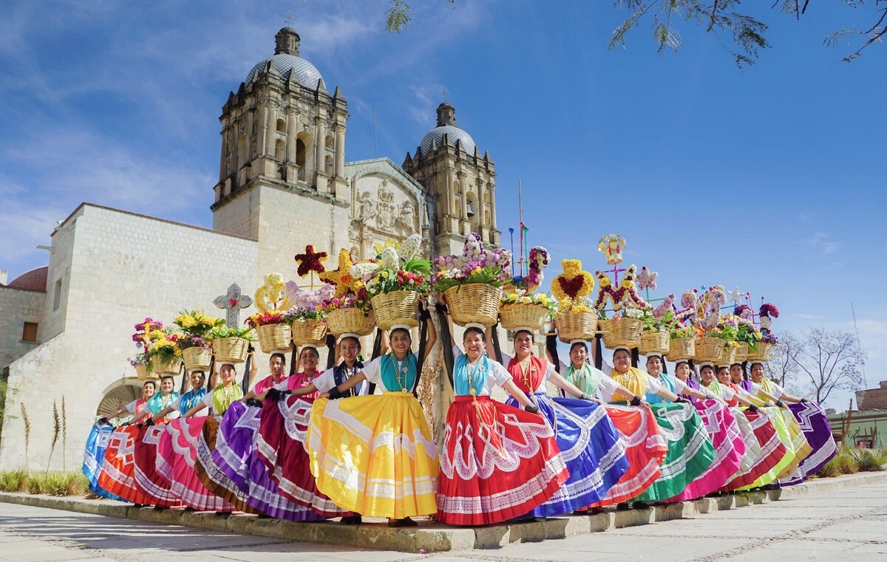

OAXACA
Un sitio lleno de historia
Su legado cultural, artístico y gastronómico, posicionan a la ciudad de Oaxaca de Juárez, como uno de los destinos más importantes de México, ubicado en el estado del mismo nombre. Para confirmarlo, hay que dar una vuelta por el centro histórico, considerado como Patrimonio de la Humanidad y conocido como la “Verde Antequera”, por sus majestuosas construcciones de cantera verde; tal es el caso del Centro Cultural Santo Domingo, distinguido por su antiguo convento de orden dominica.
Desde este atractivo puedes comenzar tu visita y continuar por el andador turístico Macedonio Alcalá. Las calles que se desprenden de él te llevan a descubrir importantes museos, como el Museo Textil y el Museo de Arte Contemporáneo de Oaxaca (MACO), fundado por el entrañable pintor oaxaqueño Francisco Toledo. El corredor también es un punto importante para comprar artesanías, muchas veces con la oportunidad de ver el proceso de elaboración en vivo. Restaurantes y hoteles de fachada colorida y ambiente vibrante terminan por destacar la caminata.
Lo que no te puedes perder de Oaxaca
En el listado de qué hacer en Oaxaca debes incluir una visita a su tradicional mercado 20 de Noviembre y su pasillo de humo, donde puedes comprar y preparar al instante sábanas de cecina, tasajo y tlayudas. Los comerciantes, popularmente conocidos como “marchantes”, hacen recorridos por el área acompañados con canastas repletas de quesillo, chapulines, chiles y tortillas para completar el festín culinario. Muy cerca de ahí está el mercado Benito Juárez, donde observarás decenas de artesanías locales como los alebrijes, bordados, cojines y hasta mezcales oaxaqueños, todo a muy buen precio.
En las mezcalerías del centro encontrarás la cura para todos tus males y el pretexto perfecto para sumergirte en la vida nocturna de la ciudad de Oaxaca. In Situ, Mezcaltitlán y la Mezcaloteca, son visitas obligadas para aprender todo sobre el destilado, ofrecen catas y maridajes. Si quieres conocer las tierras donde nacen los magueyes, la empresa Mezcatours organizan recorridos a palenques, incluyen la visita a las zonas arqueológicas de Mitla y Monte Albán y Hierve Agua, una maravilla natural de cascadas petrificadas.
Si te preguntas cuál es la mejor temporada para visitar Oaxaca, definitivamente el buen clima prevalece de los meses de enero a mayo y de octubre a noviembre.
